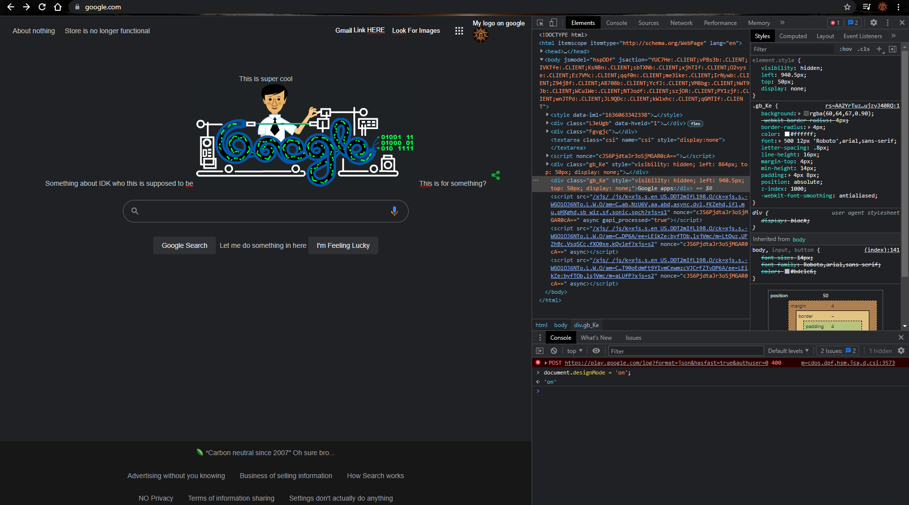

As I was researching some obscure things about web development that are interesting, I came across something that I had no clue was even possible to do. I know that you can look at things on the developer tools window, but I had no idea about the design mode that you can enter into the console of the developer tool. All this does is allow you to change things on the fly when developing a page while not having to change something in your code. To do this, you have to enter...
document.designMode = 'on';
The console will confirm this status with an
'on'
You can change things a little wildly, though I did not test much I did not get too deep into the testing for this. Below is the result of my testing.
As you can see, I just looked around to see what I could change on a surface level, but this could probably be useful for development when you just want to see what you could change without making a commitment to it in your code, and having to undo it if you were unsatisfied with the result.